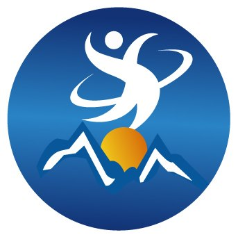

IT4D

IT4D conference is one of the biggest conferences that is held in Nepal.
Its primary objective is to serve as a platform for sharing experiences and insights about how IT can be used for proper development.
Till now, it has been organized two times: in July of 2012 and 2014. Many researchers, practitioners, policy makers, and
development workers can attend this conference for sharing their papers, articles and experience related to IT field.
Moreover, the conference is also open to students who are interested in making a career in IT.
IT4D is organized by Deerwalk Institute of Technology (Nepal) in collaboration with
Tribhuwan University (Nepal), Kathmandu University (Nepal), University of Windsor (Canada) and Deerwalk Services Pvt. Ltd. (Nepal).